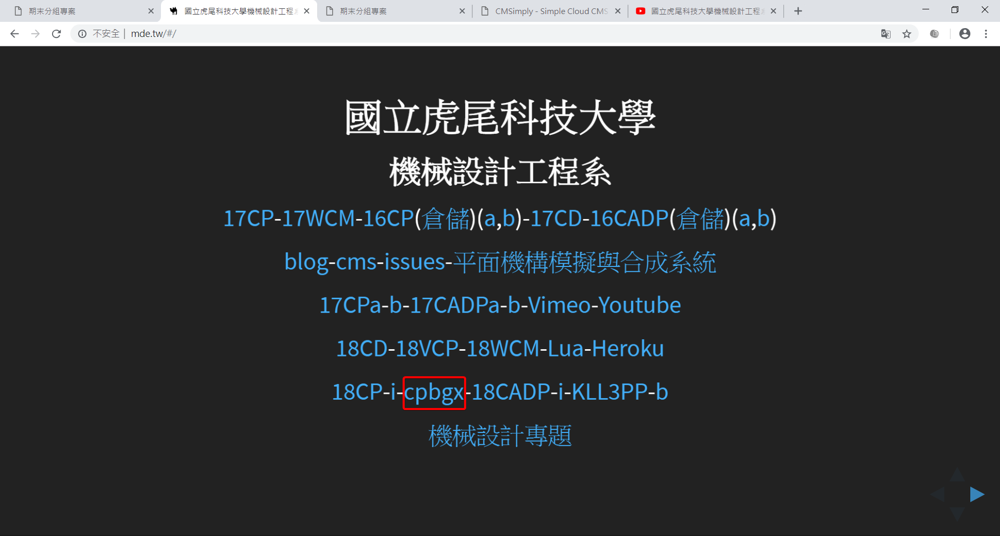
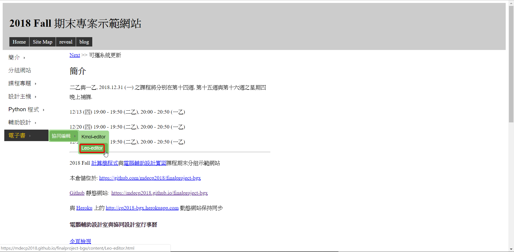
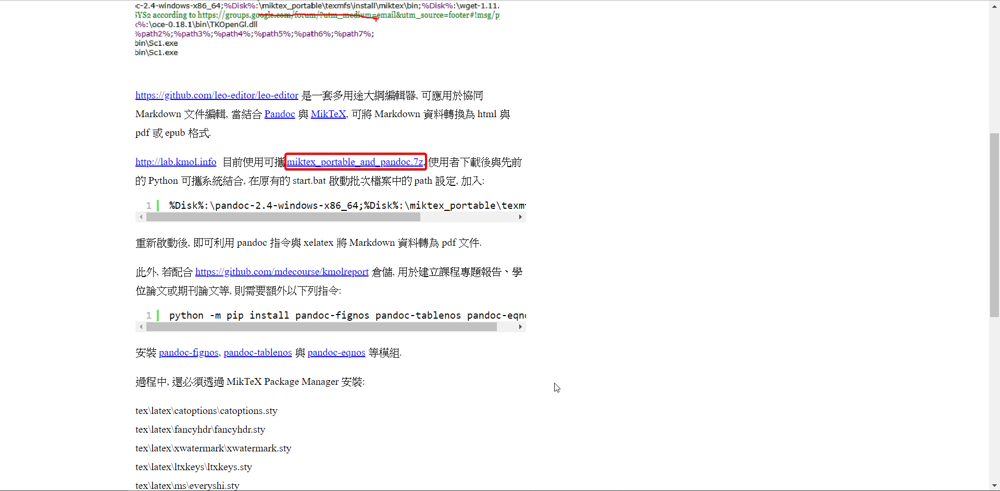
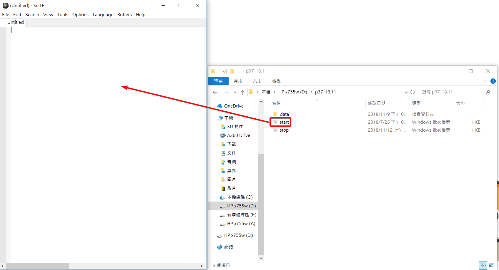
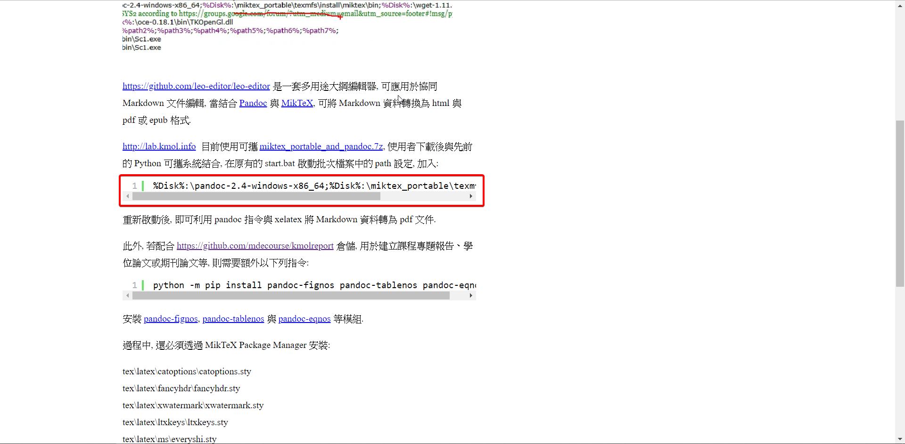
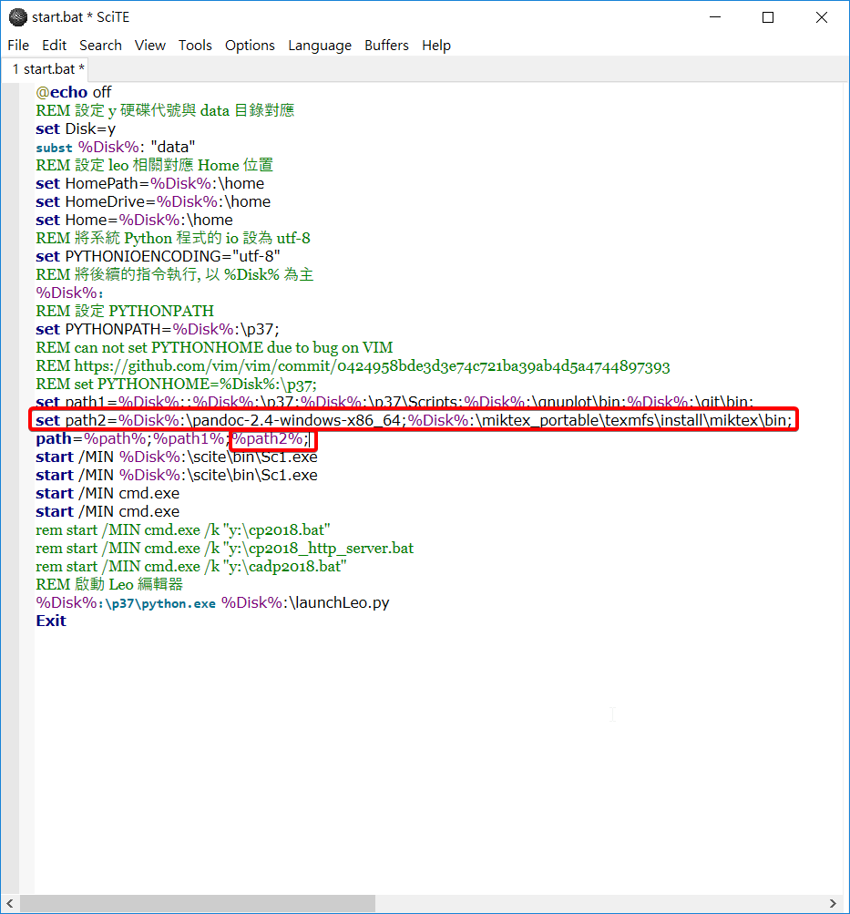
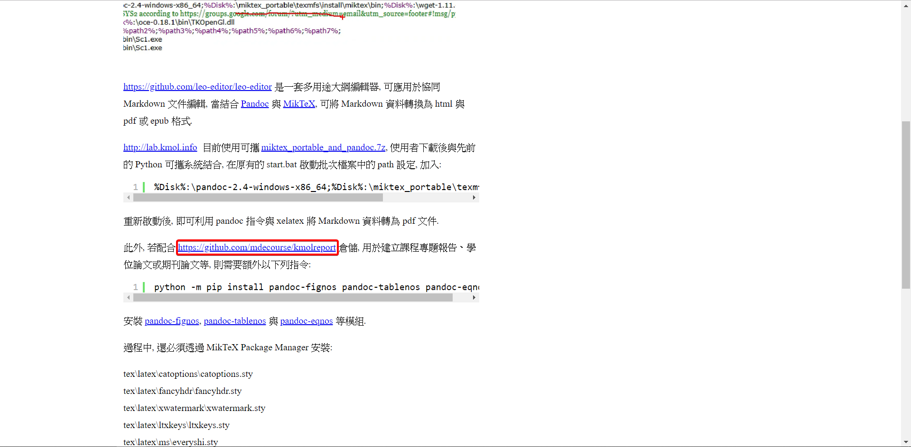
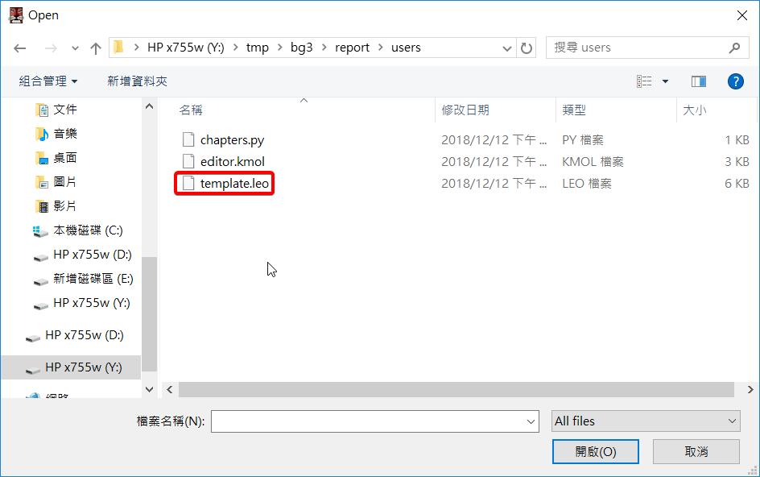
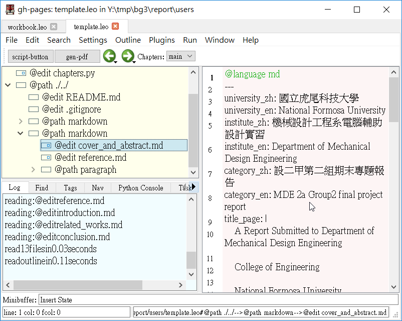

從mde.tw點選cpbgx進入2018 Fall 期末專案示範網站 (Click " cpbgx " from " mde.tw " to enter the " 2018 Fall final project demonstration website " )

電子書>協同編輯>Leo-editor (e-book > Collaborative Editing > Leo-editor)

下載 miktex_portable_and_pandoc.7z解壓縮並拉到Y槽 (Download " miktex_portable_and_pandoc.7z " unzip and pull to slot " Y ")

將start.bat拖移到SciTE (Drag " start.bat " to " SciTE ")

將%Disk%:\pandoc-2.4-windows x86_64;%Disk%:\miktex_portable\texmfs\install\miktex\bin;複製到start.bat裡面 (Copy " %Disk%:\pandoc-2.4-windows x86_64;%Disk%:\miktex_portable\texmfs\install\miktex\bin; " to " start.bat " )

新增path2，在path後面要加上%path2%; ，否則無效 (New path2, and behind the path2 to add " %path2% " ,otherwise invalid)
重新啟動後，即可利用 pandoc 指令與 xelatex 將 Markdown 資料轉為 pdf 文件(After restarting,you can use the pandoc command with xelatex to convert Markdown data to a pdf file.)

git clone https://github.com/mdecourse/kmolreport

在Leo Editor開起template.leo (Open " template.leo " in " Leo Editor ")

即可開始編輯自己的內容, 完成後轉成pdf (You can start editing your own content and convert to pdf when you are done.)
